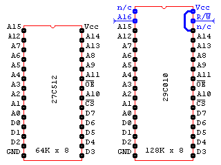
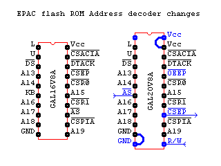
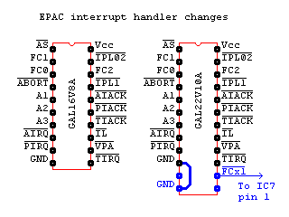

|
|
Flash ROM. By Lee Davison. |
|
 The circuit.With all this extra memory and speed it seemed a bit of a let down that the EPAC had only 64K of EPROM available for it's firmware. I did toy briefly with the idea of just using a bigger EPROM but then wondered how hard would it be to add Flash ROM instead, and thus a plan was born.
I had already worked out how to add 32 pin RAM, using the existing 28 pin locations and flying leads, and it didn't seem much more work to do the same to be able to use 32 pin flash ROM in the 28 pin EPROM socket.
 Reading and writing.Comparing the pinout of a 1Mbit flash ROM with a 512Kbit EPROM there are only five pins which differ and two of those are 'no connect' which can be ignored or connected as needed. (But test it first. While the DIP AT29C010A, pictured above, 'no connect' pins are not connected to anything the PLCC version has pin 30 tied to ground internally, even though the datasheet says 'no internal connection'. I found out the hard way.) One other is Vcc which is already present on the 27C512 socket leaving only A16 and R/W to find
In this case Vcc on pin 32 is tied to pin 30, a 'no connect' which now sits in the 28 pin Vcc position and A16 and R/W are connected by flying leads to the A16 and R/W pins underneath the processor. With this done a flash ROM can be used for the BIOS
 If I may ..With the EPROM the output enable was driven by the address decoder and the chip enable was either tied to this or tied to ground. Leaving these pins tied together works for reading the flash as both output enable and chip enable go low but writes to the flash require the chip enable to be low and the output enable to be high. This needs another output, IC2 chip enable, and input, R/W, on the address decoder IC7.
Unfortunately there is only one 'spare' pin available, KB on pin 6, so to give more pins IC7 is replaced with a GAL20V8 which, once Vcc and ground are taken care of, gives two more pins to play with.
To do this a 24 pin socket is inserted in a 20 pin socket that has had pin 13 removed and a lead connected to go to J1 pin 2, the flash ROM chip select, and this lot goes into the IC7 socket. On the underside of the board pin 13, /AS, is linked to pin 6, which was KB, and another lead goes from R/W on the processor to pin 13 on the new 24 pin socket.
This allows the new IC7, a GAL20V8A, to provide separate /CS and /OE signals to the flash ROM.
GAL files... interrupt. One thing remains to be resolved. During an interrupt cycle the processor makes A19 to A4 = 1, puts the interrupt level on A1 to A3, makes FC0, FC1, FC2 = 1 and does a read cycle to acknowledge the interrupt and, if needed, get the vector. The problem here is that if FC0 to FC2 are ignored this looks like a read of the BIOS ROM to the address decoder which means the BIOS outputs a value during the vector fetch possibly causing an uninitialized interrupt error.
The solution is to disable BIOS accesses when FC0, FC1, FC2 = 1 but the function code signals only go to IC8 which handles interrupt cycles. To get the needed signal IC8 is replaced by a GAL22V10A in 24 pin socket that has the ground pin, pin 12, linked to pin 10 to provide the ground connection for the GAL. The one free output pin, pin 14, provides an FC0, FC1, FC2 = 1 signal which is fed to the remaining free input pin, pin 13, on the address decoder GAL.
Lastly the GAL logic files. Three versions of IC7 are provided, one for 64K RAM, 2 x 32K, one for 256K RAM, 2 x 128K, and one for 896K RAM, 2 x 512K. Only one version of IC8 is needed as this remains the same regardless of RAM size.
IC7 and IC8 logic files .
| Last page update: 20th March, 2006. | e-mail me
 |